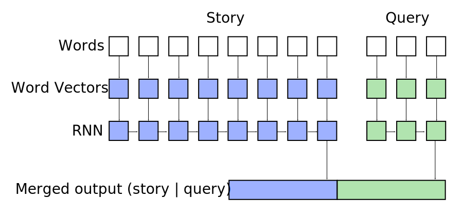

bAbi Q&A in Keras

sentrnn = Sequential()
sentrnn.add(Embedding(vocab_size, EMBED_HIDDEN_SIZE, mask_zero=True))
sentrnn.add(RNN(EMBED_HIDDEN_SIZE, SENT_HIDDEN_SIZE, return_sequences=False))
qrnn = Sequential()
qrnn.add(Embedding(vocab_size, EMBED_HIDDEN_SIZE))
qrnn.add(RNN(EMBED_HIDDEN_SIZE, QUERY_HIDDEN_SIZE, return_sequences=False))
model = Sequential()
model.add(Merge([sentrnn, qrnn], mode='concat'))
model.add(Dense(SENT_HIDDEN_SIZE + QUERY_HIDDEN_SIZE, vocab_size, activation='softmax'))
model.compile(optimizer='adam', loss='categorical_crossentropy', class_mode='categorical')
model.fit([X, Xq], Y, batch_size=BATCH_SIZE, nb_epoch=EPOCHS, validation_split=0.05, show_accuracy=True)
loss, acc = model.evaluate([tX, tXq], tY, batch_size=BATCH_SIZE, show_accuracy=True)